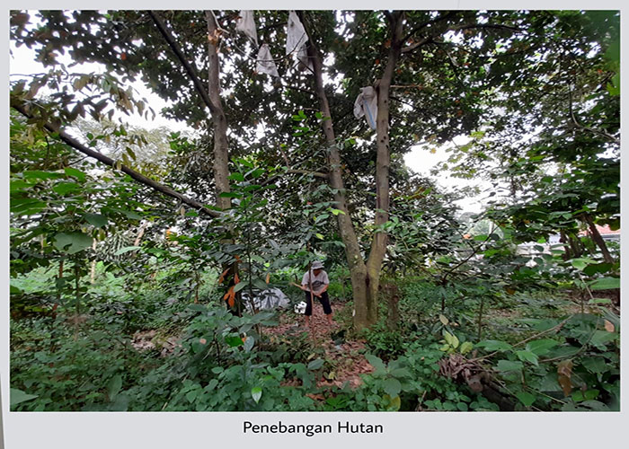
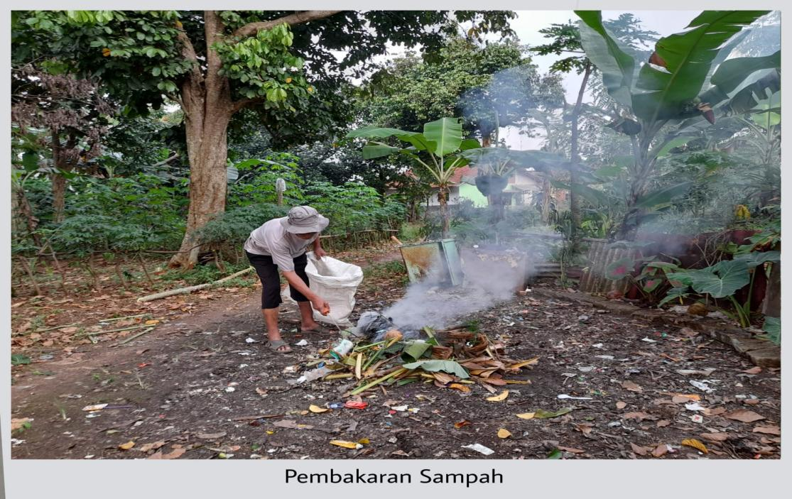
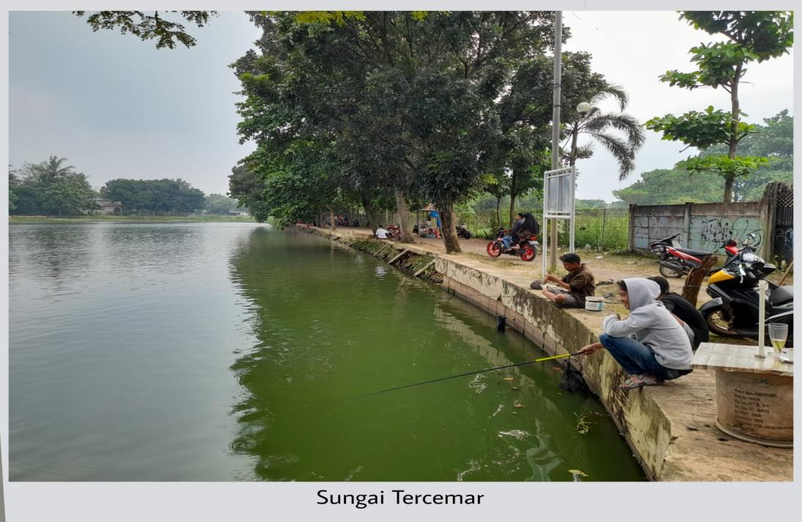

Petunjuk
Strategi Pengendalian Pencemaran Udara Menuju Kota yang Sehat
Tingkat pencemaran udara di kota semakin memprihatinkan. World Bank juga menempatkan Jakarta menjadi salah satu kota dengan kadar polutan atau partikulat tertinggi setelah Beijing, New Delhi dan Mexico City. Rekor yang semakin memiriskan saya. Di Indonesia sendiri, sebagaimana data yang dipaparkan oleh Pengkajian Ozon dan Polusi Udara Lembaga Penerbangan dan Antariksa Nasional (Lapan), Jakarta menduduki peringkat polusi udara tertinggi di Indonesia.
Dari semua penyebab polusi udara yang ada, emisi transportasi terbukti sebagai penyumbang pencemaran udara tertinggi di Indonesia, yakni sekitar 85 persen. Hal ini diakibatkan oleh laju pertumbuhan kepemilikan kendaraan bermotor yang tinggi. Sebagian besar kendaraan bermotor itu menghasilkan emisi gas buang yang buruk, baik akibat perawatan yang kurang memadai ataupun dari penggunaan bahan bakar dengan kualitas kurang baik (misalnya kadar timbal yang tinggi). Pembakaran sampah secara sembarangan dan industri juga turut berperan.
Dampak Pencemaran Udara Pada Kesehatan
Dari segi kesehatan, pencemaran udara dapat berakibat pada terganggunya kesehatan dan pertumbuhan anak-anak. Misalnya anemia. Memang, di masa pertumbuhan sel-sel darah merah terus diproduksi. Namun, karena masuknya timbal akan merusak sel darah merah, maka jumlahnya makin lama makin berkurang dan akhirnya anak menderita anemia.
Timbal yang masuk ke dalam tubuh juga akan merusak sel-sel darah merah yang mestinya dikirim ke otak. Akibatnya, terjadilah gangguan pada otak. Hal yang paling dikhawatirkan, anak bisa mengalami gangguan kemampuan berpikir, daya tangkap lambat, dan tingkat IQ rendah. Dalam hal pertumbuhan fisik, keberadaan timbal ini akan berdampak pada beberapa gangguan, seperti keterlambatan pertumbuhan dan gangguan pendengaran pada frekuensi-frekuensi tertentu.
Pada orang dewasa, timbal dapat mempengaruhi sistem reproduksi atau kesuburan. Zat ini dapat mengurangi jumlah dan fungsi sperma sehingga menyebabkan kemandulan. Timbal juga mengganggu fungsi jantung, ginjal, dan menyebabkan penyakit stroke serta kanker. Ibu hamil akan menghadapi risiko yang tinggi jika kadar timbal dalam darahnya di ambang batas normal. Timbal ini akan menuju janin dan menghambat tumbuh-kembang otaknya. Risiko lain adalah ibu mengalami keguguran.
Dampak Pencemaran Udara pada Lingkungan
Menghambat fotosistesis tumbuhan. Terhadap tanaman yang tumbuh di daerah dengan tingkat pencemaran udara tinggi dapat terganggu pertumbuhannya dan rawan penyakit, antara lain klorosis, nekrosis, dan bintik hitam. Partikulat yang terdeposisi di permukaan tanaman dapat menghambat proses fotosintesis.
Menyebabkan hujan asam. pH biasa air hujan adalah 5,6 karena adanya CO2 di atmosfer. Pencemar udara seperti SO2 dan NO2 bereaksi dengan air hujan membentuk asam dan menurunkan pH air hujan. Dampak dari hujan asam ini antara lain: Mempengaruhi kualitas air permukaan, Merusak tanaman, Melarutkan logam-logam berat yang terdapat dalam tanah sehingga mempengaruhi kualitas air tanah dan air permukaan, serta Bersifat korosif sehingga merusak material dan bangunan.

Strategi Pengendalian Pencemaran Udara
Untuk menanggulangi terjadinya pencemaran udara dapat dilakukan melalui beberapa usaha antara lain:
1. Mengganti bahan bakar kendaraan bermotor dengan bahan bakar yang tidak menghasilkan gas karbon monoksida.
2. Pengolahan atau daur ulang limbah asap industri.
3. Penghijauan dan reboisasi atau penanaman kembali pohon-pohon pengganti.
4. Menghentikan pembakaran sampah secara sembarangan.
Bersama Cintai Lingkungan dan Cegah Kerusakan Hutan
Kerusakan hutan (deforestasi) masih tetap menjadi ancaman di Indonesia. Menurut data laju deforestasi (kerusakan hutan) periode 2003-2006 yang dikeluarkan oleh Departemen Kehutanan, laju deforestasi di Indonesia mencapai 1,17 juta hektar pertahun. Dari total luas hutan di Indonesia yang mencapai 180 juta hektar, menurut Menteri Kehutanan Zulkifli Hasan (Menteri Kehutanan sebelumnya menyebutkan angka 135 juta hektar) sebanyak 21 persen atau setara dengan 26 juta hektar telah dijarah total sehingga tidak memiliki tegakan pohon lagi. Artinya, 26 juta hektar hutan di Indonesia telah musnah.
Selain itu, 25 persen lainnya atau setara dengan 48 juta hektar juga mengalami deforestasi dan dalam kondisi rusak akibat bekas area HPH (hak penguasaan hutan). Dari total luas htan di Indonesia hanya sekitar 23 persen atau setara dengan 43 juta hektar saja yang masih terbebas dari deforestasi (kerusakan hutan) sehingga masih terjaga dan berupa hutan primer.
Penyebab Deforestasi
Laju deforestasi hutan di Indonesia paling besar disumbang oleh kegiatan industri, terutama industri kayu, yang telah menyalahgunakan HPH yang diberikan sehingga mengarah pada pembalakan liar. Penebangan hutan di Indonesia mencapai 40 juta meter kubik setahun.
Sementara laju penebangan yang sustainable (lestari berkelanjutan) sebagaimana direkomendasikan oleh Departemen Kehutanan menurut World Bank adalah 22 juta kubik meter setahun. Penyebab deforestasi terbesar kedua di Indonesia, disumbang oleh pengalihan fungsi hutan (konversi hutan) menjadi perkebunan. Konversi hutan menjadi area perkebunan (seperti kelapa sawit), telah merusak lebih dari 7 juta ha hutan sampai akhir 1997.

Dampak Deforestasi
Deforestasi (kerusakan hutan) memberikan dampak yang signifikan bagi masyarakat dan lingkungan alam di Indonesia. Kegiatan penebangan yang mengesampingkan konversi hutan mengakibatkan penurunan kualitas lingkungan yang pada akhirnya meningkatkan peristiwa bencana alam, seperti tanah longsor dan banjir.
Dampak buruk lain akibat kerusakan hutan adalah terancamnya kelestarian satwa dan flora di Indonesia utamanya flora dan fauna endemik. Satwa-satwa endemik yang semakin terancam kepunahan akibat deforestasi hutan misalnya lutung jawa (Trachypithecus auratus), dan merak (Pavo muticus), owa jawa (Hylobates moloch), macan tutul (Panthera pardus), elang jawa (Spizaetus bartelsi), merpati hutan perak (Columba argentina), dan gajah sumatera (Elephant maximus sumatranus).
Sungai sebagai Sumber Kehidupan Mahkluk Hidup
Indonesia memiliki sedikitnya 5.590 sungai utama dan 65.017 anak sungai. Dari 5,5 ribu sungai utama panjang totalnya mencapai 94.573 km dengan luas Daerah Aliran Sungai (DAS) mencapai 1.512.466 km2. Selain mempunyai fungsi hidrologis, sungai juga mempunyai peran dalam menjaga keanekaragaman hayati, nilai ekonomi, budaya, transportasi, pariwisata dan lainnya.
Saat ini sebagian Daerah Aliran Sungai di Indonesia mengalami kerusakan sebagai akibat dari perubahan tata guna lahan, pertambahan jumlah penduduk serta kurangnya kesadaran masyarakat terhadap pelestarian lingkungan DAS. Gejala Kerusakan lingkungan Daerah Aliran Sungai (DAS) dapat dilihat dari penyusutan luas hutan dan kerusakan lahan terutama kawasan lindung di sekitar Daerah Aliran Sungai.
Dampak Kerusakan DAS
Kerusakan Daerah Aliran Sungai (DAS) yang terjadi mengakibatkan kondisi kuantitas (debit) air sungai menjadi fluktuatif antara musim penghujan dan kemarau. Selain itu juga penurunan cadangan air serta tingginya laju sendimentasi dan erosi. Dampak yang dirasakan kemudian adalah terjadinya banjir di musim penghujan dan kekeringan di musim kemarau. Kerusakan Daerah Aliran Sungai (DAS) pun mengakibatkan menurunnya kualitas air sungai yang mengalami pencemaran yang diakibatkan oleh erosi dari lahan kritis, limbah rumah tangga, limbah industri, limbah pertanian (perkebunan) dan limbah pertambangan. Pencemaran air sungai di Indonesia juga telah menjadi masalah tersendiri yang sangat serius.

Dapat dilihat dengan jelas bahwa sepanjang aliran sungai terdapat lebih dari 200-an rumah penduduk yang saling berlomba memenuhi sungai ini dengan berbagai limbah. Lebih dari 5 juta penduduk tinggal di kanan kiri sungai, juga ikut berlomba memenuhi sungai dengan berbagai sampah dan limbah rumah tangga. Padahal 5 juta penduduk ini juga mengandalkan air sungai untuk memenuhi berbagai kebutuhan sehari-sehari.
Siapapun yang menyaksikan aliran air sungai pasti langsung disuguhi oleh luapan sampah. Bahkan, aliran sungai di indonesia ini lebih pas disebut sebagai sungai sampah. Tapi benarkah aliran sungai di indonesia pantas dianugerahi sebagai sungai paling tercemar di seluruh dunia?. Marilah kita terima anugerah gelar sungai paling tercemar dari huffingtonpost.com ini sebagai sebuah jeweran buat kita semua agar kita sadar. Jangan sampai tahun depan, atau bahkan besok kita kebanjiran gelar semacam ini. Cukup sungai yang mendapatkan gelar tempat paling tercemar, jangan diikuti oleh danau, laut, gunung, kota, ataupun apapun di negeri ini.